ggplot(modelData, aes(x = wealth, y = lib_dem)) +geom_point() +geom_smooth(method ="lm", color ="#E48957", se =FALSE) +labs(x ="GPD per capita", y ="Liberal Democracy Index") +theme_bw()
Using the Scales Package
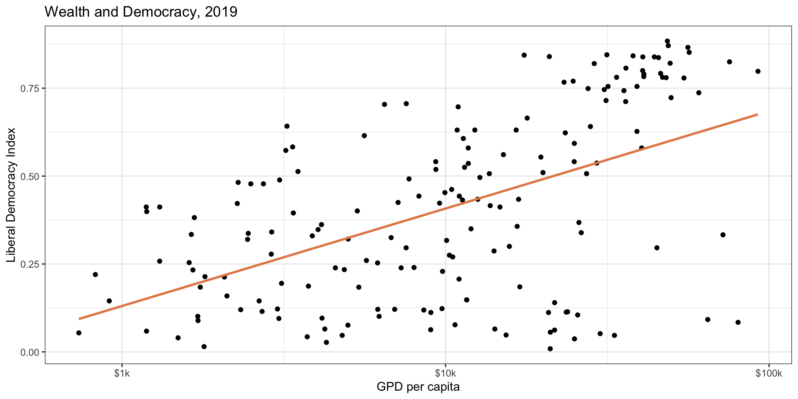
Using the Scales Package
ggplot(modelData, aes(x = wealth, y = lib_dem)) +geom_point() +geom_smooth(method ="lm", color ="#E48957", se =FALSE) +scale_x_log10(label = scales::label_dollar(suffix ="k")) +labs(title ="Wealth and Democracy, 2019",x ="GPD per capita", y ="Liberal Democracy Index") +theme_bw()
Models as Functions
We can represent relationships between variables using functions
A function is a rule or set of rules that maps input values to output values
Plug in the inputs and receive back the output
Example: The formula \(y = 3x + 7\) is a function with input \(x\) and output \(y\)
If \(x\) is \(5\), \(y\) is \(22\)
\(y = 3 \times 5 + 7 = 22\)
Quant Lingo
Response variable: Variable whose behavior or variation you are trying to understand, on the y-axis in the plot (the output)
Dependent variable
Outcome variable
Y variable
Explanatory variables: Other variables that you want to use to explain the variation in the response, on the x-axis in the plot (the input)
Independent variables
Predictors
Linear model with one explanatory variable…
\(Y = a + bX\)
\(Y\) is the outcome variable
\(X\) is the explanatory variable
\(a\) is the intercept: the predicted value of \(Y\) when \(X\) is equal to 0
\(b\) is the slope of the line (remember rise over run!)
Quant Lingo
Predicted value: Output of the model function
The model function gives the typical (expected) value of the response variable conditioning on the explanatory variables
We often call this \(\hat{Y}\) to differentiate the predicted value from an observed value of Y in the data
Residuals: A measure of how far each case is from its predicted value (based on a particular model)
Residual = Observed value (\(Y\)) - Predicted value (\(\hat{Y}\))
How far above/below the expected value each case is
Residuals
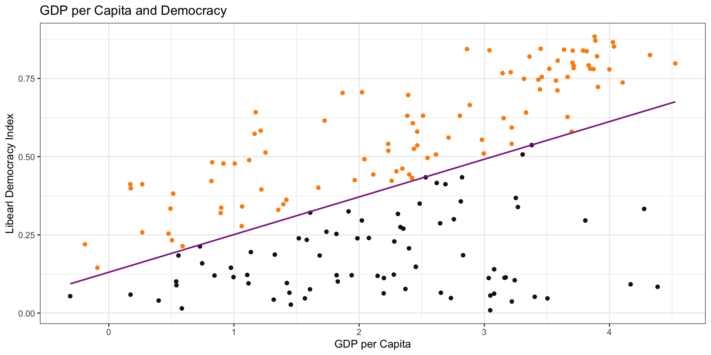
Linear Model
\(\hat{Y} = a + b \times X\)
\(\hat{Y} = 0.13 + 0.12 \times X\)
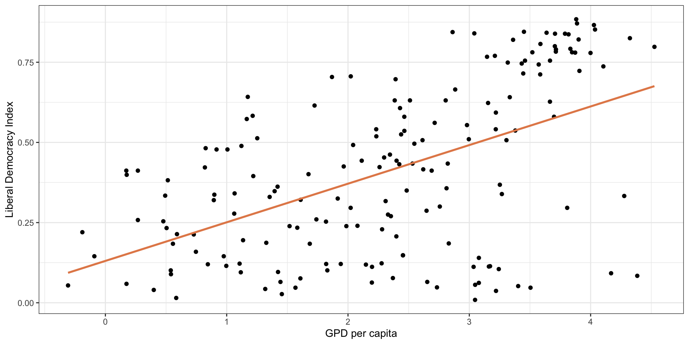
Linear Model: Interpretation
\(\hat{Y} = a + b \times X\) \(\hat{Y} = 0.13 + 0.12 \times X\)
What is the interpretation of our estimate of \(a\)?
\(b\) is the predicted change in \(Y\)associated with a ONE unit change in X.
Linear Model: Interpretation
Linear Model: Interpretation
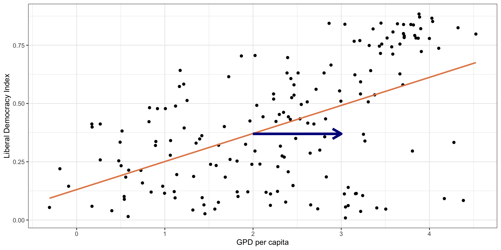
Linear Model: Interpretation
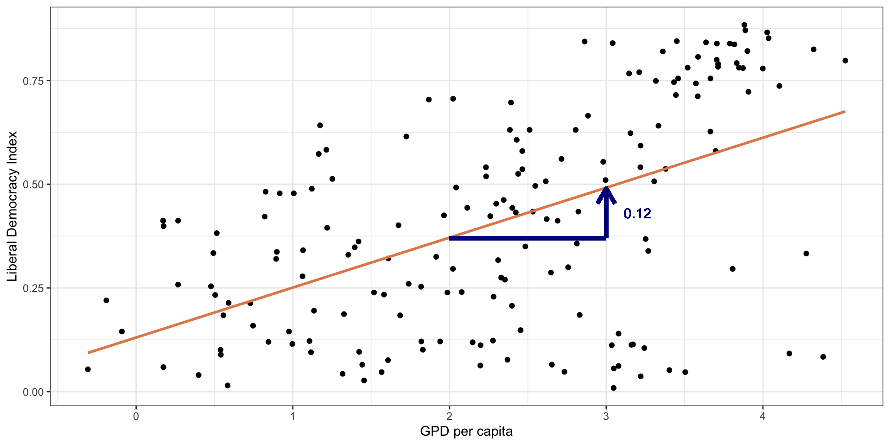
Linear Model: Interpretation
Is this the causal effect of GDP per capita on liberal democracy?
No! It is only the association…
To identify causality we need other methods (beyond the scope of this course).
Your Task
An economist is interested in the relationship between years of education and hourly wages. They estimate a linear model with estimates of \(a\) and \(b\) as follows:
\(\hat{Y} = 9 + 1.60*{YrsEdu}\)
1. Interpret \(a\) and \(b\)
2. What is the predicted hourly wage for those with 10 years of education?
Next step
Linear model with one predictor: \(Y = a + bX\)
For any given data…
How do we figure out what the best values are for \(a\) and \(b\)??
Estimation
Linear Model with Single Predictor
Goal: Estimate Democracy score (\(\hat{Y_{i}}\)) of a country given level of GDP per capita (\(X_{i}\)).
Or: Estimate relationship between GDP per capita and democracy.
Linear Model with Single Predictor
Estimate Model
model1 <-lm(lib_dem ~ log_wealth, data = modelData) summary(model1)
Call:
lm(formula = lib_dem ~ log_wealth, data = modelData)
Residuals:
Min 1Q Median 3Q Max
-0.57441 -0.14334 0.03911 0.18730 0.37017
Coefficients:
Estimate Std. Error t value Pr(>|t|)
(Intercept) 0.13051 0.03806 3.429 0.000758 ***
log_wealth 0.12040 0.01471 8.188 5.75e-14 ***
---
Signif. codes: 0 '***' 0.001 '**' 0.01 '*' 0.05 '.' 0.1 ' ' 1
Residual standard error: 0.2233 on 172 degrees of freedom
(5 observations deleted due to missingness)
Multiple R-squared: 0.2805, Adjusted R-squared: 0.2763
F-statistic: 67.04 on 1 and 172 DF, p-value: 5.754e-14
How do we get the “best” values for the slope and intercept?
How would you draw the “best” line?
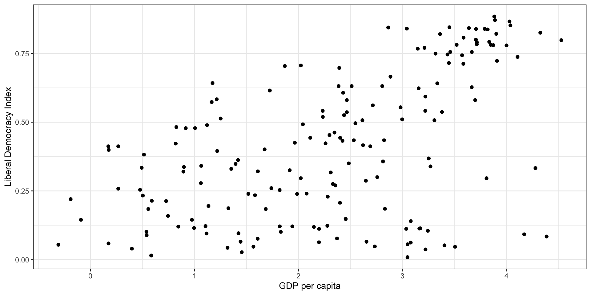
How would you draw the “best” line?
Least squares regression
Remember the residual is the difference between the actual value and the predicted value
The regression line minimizes the sum of squared residuals.
Least squares regression
Residual for each point is: \(e_i = y_i - \hat{y}_i\)
Least squares regression line minimizes \(\sum_{i = 1}^n e_i^2\).
Why do we square the residual?
Why not take absolute value?
Principle: larger penalty for residuals further away
Math: makes the math easier and some nice properties (not our concern here…)
Least squares regression
Very Simple Example
What should the slope and intercept be?
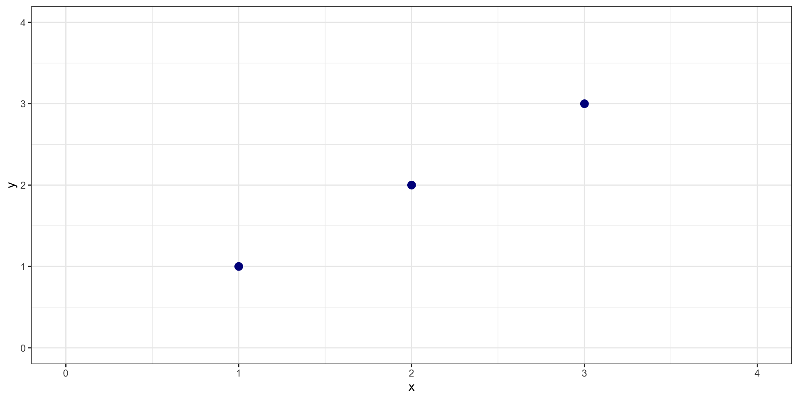
Example
\(\hat{Y} = 0 + 1*X\)
Example
What is the sum of squared residuals?
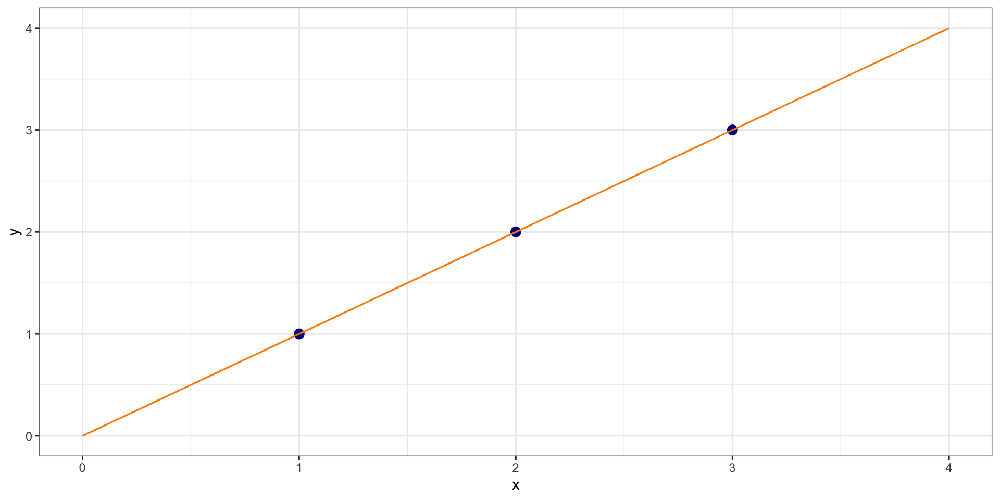
Example
What is sum of squared residuals for \(y = 0 + 0*X\)?
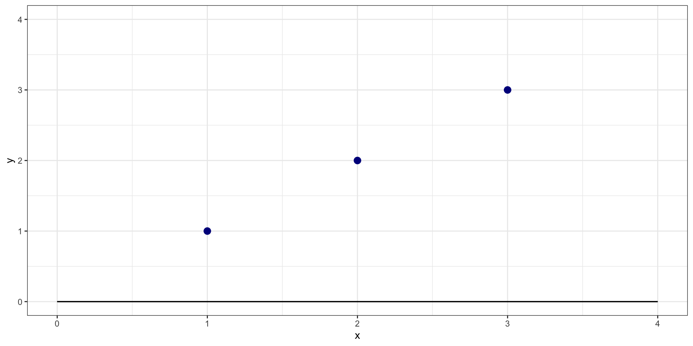
Example
What is sum of squared residuals for \(y = 0 + 0*X\)?
(1-0)^2+ (2-0)^2+ (3-0)^2
[1] 14
Example
What is sum of squared residuals for \(y = 0 + 2*X\)?
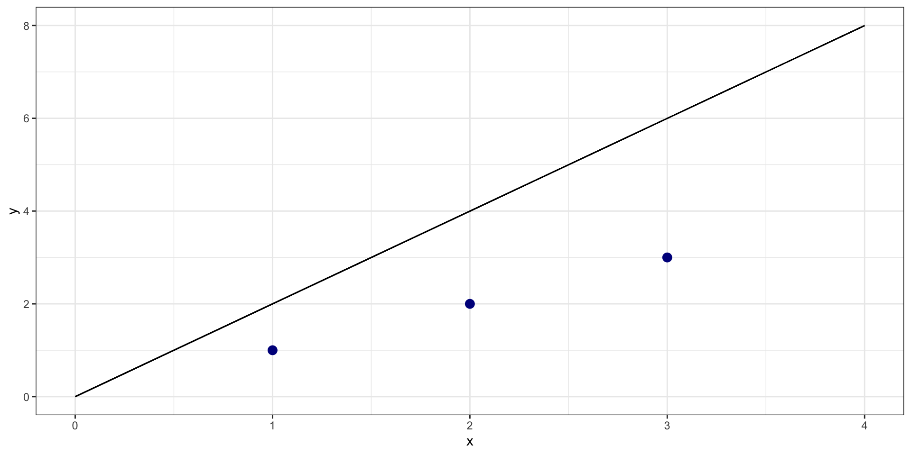
Example
What is sum of squared residuals for \(y = 0 + 2*X\)?
(1-2)^2+ (2-4)^2+ (3-6)^2
[1] 14
One more…
What is sum of squared residuals for \(y = 0 + -1*X\)?
One more…
What is sum of squared residuals for \(y = 0 + -1*X\)?
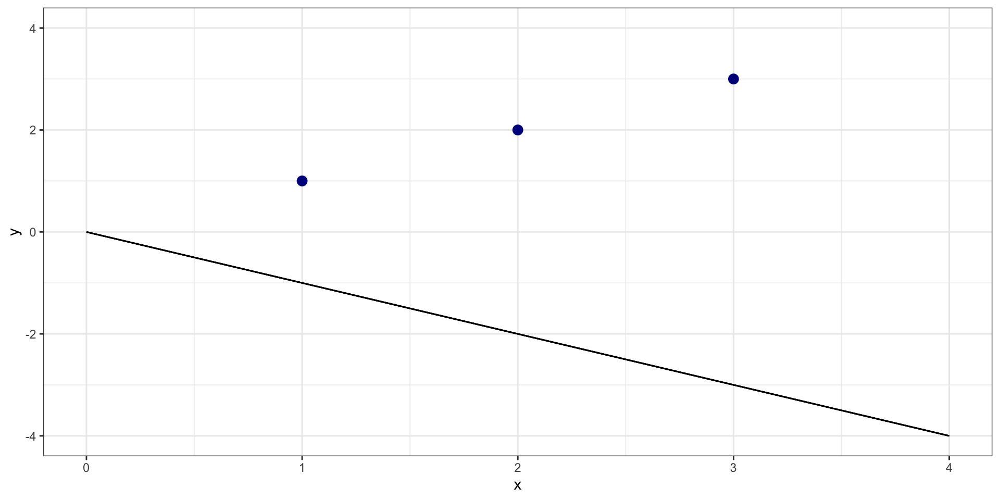
(1+1)^2+ (2+2)^2+ (3+3)^2
[1] 56
Cost Function
Sum of Squared Residuals as function of possible values of \(b\)
Least Squares Regression
When we estimate a least squares regression, it is looking for the line that minimizes sum of squared residuals
In the simple example, I set \(a=0\) to make it easier. More complicated when searching for combination of \(a\) and \(b\) that minimize, but same basic idea
Least Squares Regression
There is a way to solve for this analytically for linear regression (i.e., by doing math…)
– They made us do this in grad school…
In machine learning, people also use gradient descent algorithm in which the computer searches over possible combinations of \(a\) and \(b\) until it settles on the lowest point.
Least Squares Regression
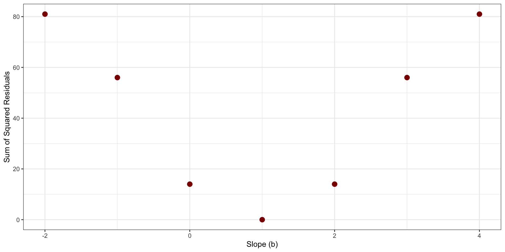
Least Squares Regression
Your Turn
Are democracies less corrupt?
V-Dem includes a Political Corruption Index, which aggregates corruption in a number of spheres (see codebook for details).
The variable name is: v2x_corr : lower values mean less corruption